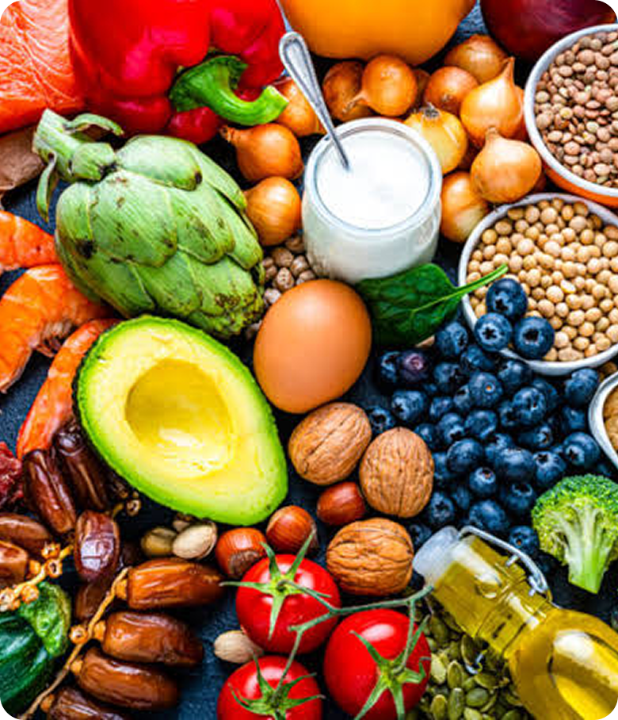

Equilíbrio Nutricional
Como Ter uma Dieta Verdadeiramente Equilibrada
Uma alimentação equilibrada não significa privação — significa variedade, moderação e consciência. Veja como está o seu cardápio de hoje comparado com o recomendado.
-
Carboidratos
—
Base energética do organismo
-
Proteínas
—
Construção e reparo muscular
-
Calorias
—
Consumo de hoje comparado à meta diária
Cereais integrais no café da manhã
5 porções de frutas e verduras/dia
Proteína magra no almoço e jantar
Gorduras boas: azeite, abacate, oleaginosas

-
Meta diária:
2.000 kcal
-
Prato Ideal:
½ vegetais · ¼ proteína · ¼ carboidratos